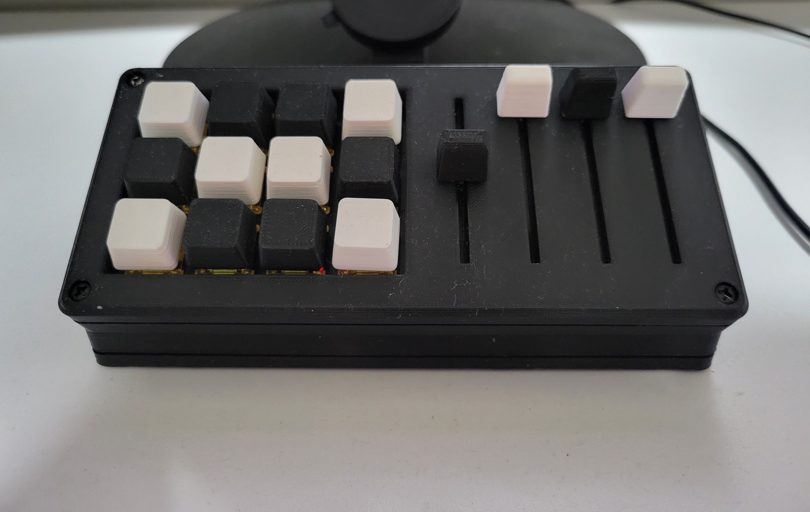

Overview
The MisteRdeck is an Arduino-powered MIDI Stream Deck designed for streaming scene switching and volume control. It features built-in faders and buttons and runs on QMK firmware for easy customization.
Features
- 12 tactile scene-control buttons
- 4 Inline fader knobs for precision volume adjustment
- USB-C or Pro Micro compatibility
- Programmable via QMK firmware
Files & Parts
- 3D model STLs: clip_single, clips, base, base_usbc, box_standard variants, fader_knob, solder_jig
- Electronics: Arduino Pro Micro or similar board, fader potentiometers, switches, diodes, wiring harness
Build Process
- 3D print chassis and components
- Solder faders and buttons to the microcontroller
- Flash QMK firmware with custom keymap
- Enclose and test functionality with MIDI software